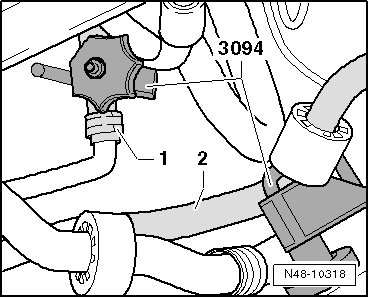
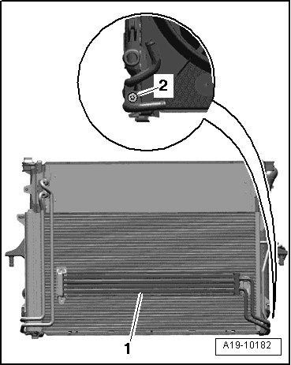

Power Steering Fluid Cooler: Service and Repair
Oil Cooler
Special tools, testers and auxiliary items required
• Hose clamps (3094)
• Torque wrench (VAG 1410)
• Spring type clip pliers (VAS 5024 A)
Removing
CAUTION!
For all repair work, especially in the engine compartment due to the tight working conditions, observe the following:
• Route lines of all types (for example for fuel, hydraulic, Evaporative Emission (EVAP) canister system, coolant and refrigerant, brake fluid, vacuum) and electrical wiring so that the original path is followed.
• To prevent damaging the lines, make sure there is enough space for all moving or hot components.
- Remove the front noise insulation.
- Remove the front bumper.
- Remove the crossmember.
- Remove the fan mount and the fans:
- Clamp off the intake hose - 1 - and the return hose - 2 - using hose clamps (3094).

- Disconnect the intake hose - 1 - and the return hose - 2 - from the oil cooler.
- Remove bolt - 2 - on back side of cooler.

- Remove the cooler:
- Detach the oil cooler - 1 - on the condenser.
Installing
Installation is the reverse of removal, with special attention to the following:
• Secure all hose connections with hose clamps appropriate to the model.
• Oil type: hydraulic fluid (G 002 000 or G 004 000 M2)
- Check hydraulic fluid level and top off, if necessary.
- steering system, bleeding and checking for leaks. Refer to --> [ Power Steering System Bleeding ] Power Steering System Bleeding.
Tightening Specifications